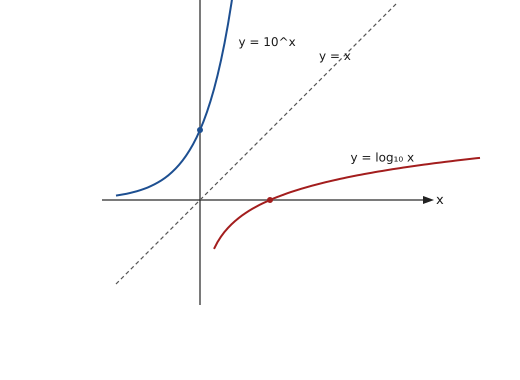

<script>if(location.hostname.endsWith('onrender.com'))location.replace('https://math-sandbox.pages.dev'+location.pathname+location.search+location.hash)</script>
<section class="theory" data-section="P23-2.1">
<h2>2.1 Logarithms to base 10</h2>
<p class="src">Based on Cambridge International AS &amp; A Level Mathematics: Pure Mathematics 2 &amp; 3 Coursebook (Hugh Neill, Douglas Quadling and Julian Gilbey), Chapter 2 Logarithmic and exponential functions, printed pp.26–29 (Key point 2.1, Worked examples 2.1–2.3, Exercise 2A). Own wording and new numbers. Logarithms to a base other than 10, and the laws of logarithms, are left to later subsections.</p>
<p class="key-words"><strong>Key words:</strong> <em>logarithm</em>, <em>logarithm to base 10</em>, <em>exponential</em></p>
<p>A logarithm to base \(10\) is the power that \(10\) must be raised to in order to obtain a given positive number. If \(10^x=y\), then \(x=\log_{10} y\). The same statement can be written \(y=10^x \iff x=\log_{10} y\). The two functions are inverses of one another, and their graphs are reflections of each other in the line \(y=x\).</p>
<p>This subsection deals with logarithms to base 10. The exponential \(10^x\) and the logarithm to base 10 are inverses. Calculators often label the base-10 logarithm key as lg.</p>
<p>The notation \(\log_{10} y\) is read “log \(y\) to base \(10\)”. On a calculator the same value is given by the \(\log\) or \(\mathrm{lg}\) key. For example, \(\log_{10} 100=2\) because \(100=10^2\), and \(\log_{10} 1=0\) because \(10^0=1\).</p>
<p></p>
<div class="worked-example">
<h4>Worked example 1: Exponential form to a logarithm</h4>
<p class="src">Book: Worked example 2.1, p.28; new equation</p>
<p>Convert \(10^x=50\) to logarithmic form, and hence solve the equation, giving the value of \(x\) correct to 3 significant figures.</p>
<ol class="steps">
<li>The base is \(10\) and the index is \(x\), so \(10^x=50\) is equivalent to \(x=\log_{10} 50\). <span class="mark">M1</span></li>
<li>Using a calculator, \(\log_{10} 50=1.69897\ldots=1.70\) to 3 significant figures. <span class="mark">A1</span></li>
</ol>
<p class="final"><strong>Answer:</strong> \(x=\log_{10} 50=1.70\) to 3 significant figures.</p>
</div>
<div class="worked-example">
<h4>Worked example 2: Logarithmic form to an exponential</h4>
<p class="src">Book: Worked example 2.2, pp.28–29; new equation</p>
<p>Convert \(\log_{10} x=1.4\) to exponential form, and hence solve the equation, giving the value of \(x\) correct to 3 significant figures.</p>
<ol class="steps">
<li>The base is \(10\) and the index is \(1.4\), so \(\log_{10} x=1.4\) is equivalent to \(x=10^{1.4}\). <span class="mark">M1</span></li>
<li>Using a calculator, \(10^{1.4}=25.118\ldots=25.1\) to 3 significant figures. <span class="mark">A1</span></li>
</ol>
<p class="final"><strong>Answer:</strong> \(x=10^{1.4}=25.1\) to 3 significant figures.</p>
</div>
<div class="worked-example">
<h4>Worked example 3: Exact values as powers of 10</h4>
<p class="src">Book: Worked example 2.3, p.29; new numbers</p>
<p>Find the exact value of \(\log_{10} 1000\), of \(\log_{10} 0.01\), and of \(\log_{10}\bigl(100\sqrt{10}\bigr)\).</p>
<ol class="steps">
<li>\(\log_{10} 1000=\log_{10} 10^3=3\). <span class="mark">A1</span></li>
<li>\(\log_{10} 0.01=\log_{10} 10^{-2}=-2\). <span class="mark">A1</span></li>
<li>\(100\sqrt{10}=10^2\times 10^{1/2}=10^{2.5}\), so \(\log_{10}\bigl(100\sqrt{10}\bigr)=2.5\). <span class="mark">A1</span></li>
</ol>
<p class="final"><strong>Answer:</strong> \(3\), \(-2\) and \(2.5\)</p>
</div>
<h3>Common mistakes</h3>
<ul>
<li>Writing the base and the index the wrong way round: in logarithmic form the index stands alone, and the base of \(10^x\) is the base of the logarithm.</li>
<li>Treating \(\log_{10}(10y)\) as \(y\), or \(\log_{10}(y^{10})\) as \(y\), instead of first writing the argument as a power of \(10\).</li>
<li>Giving a calculator value to the wrong number of significant figures, or leaving the answer as an un-evaluated logarithm when a decimal is required.</li>
</ul>
<h3>Quick checks</h3>
<div class="quick-check">
<h4>Quick check 1</h4>
<p>Find the exact value of \(\log_{10} 10\,000\).</p>
<details><summary>Worked solution</summary>
<p>\(\log_{10} 10\,000=\log_{10} 10^4=4\).</p>
</details>
</div>
<div class="quick-check">
<h4>Quick check 2</h4>
<p>Solve \(10^x=50\), giving \(x\) correct to 3 significant figures.</p>
<details><summary>Worked solution</summary>
<p>\(x=\log_{10} 50=1.70\) to 3 significant figures.</p>
</details>
</div>
<div class="quick-check">
<h4>Quick check 3</h4>
<p>Solve \(\log_{10} x=-2\).</p>
<details><summary>Worked solution</summary>
<p>\(x=10^{-2}=0.01\).</p>
</details>
</div>
<p class="marks-key">B marks are for a correct statement; M marks are for a correct method; A marks are for an accurate result.</p>
</section>
